Project 6: The Assembler.
Todo este proyecto se se realizó en base a nand2teris
Puedes descargar la carpeta con los resultados finales de esta parte del proyecto_06 dando click aquí.
DEPURAR UN PROGRAMA.
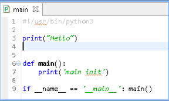 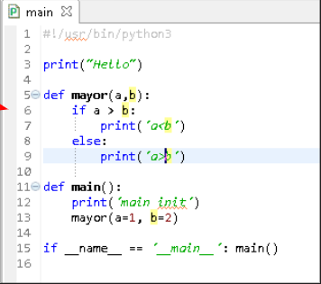¿¿Qué es main??
R. Es el nomrbe del archivo principal que se carga.
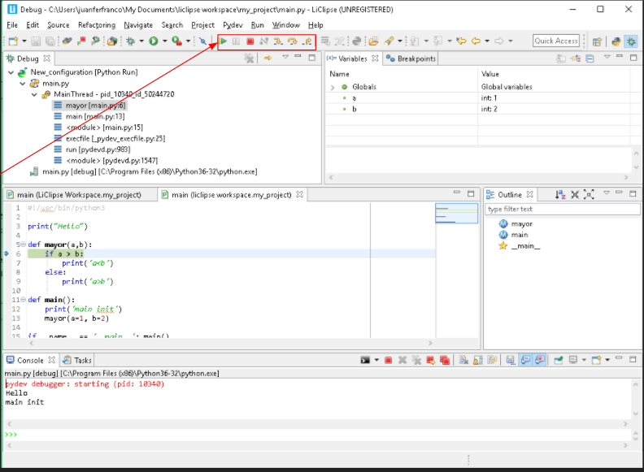¿Para qué sirven los botones mostrados en la imagen anterior?
R.Los botones sirven para desplazarce dentro del código utilizando los breakpoints que le coloquemos.
MINIPROYECTOS.
1. Leer argumentos de la línea de comandos.
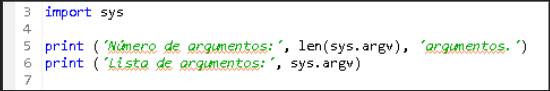¿Para qué sirve import sys?
R. Importa una libreria que permite cerrar el programa cuando hayan secciones.
¿Qué es la función len ?
R. Da el numero de elementos que da una lista
¿Qué otras funciones como len hay?
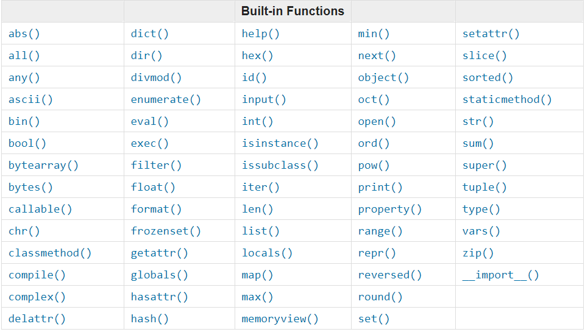sys.argv es una lista, ¿Qué son listas?
R. Las listas son tipos de datos que se pueden escribir como listas de valores (elementos) separados por comas y entre corchetes. Los elementos de las listas no tienen que ser del mismo tipo.
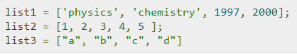¿Cómo encuentro el número de elementos que tiene una lista?
R. Con la función len.
2. ¿Cómo ejecutar un programa con argumentos?
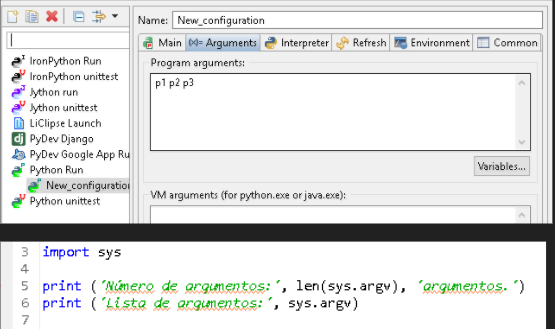¿Qué conclusión puede sacar?
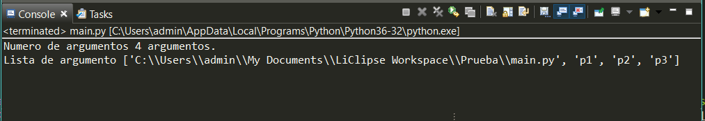R. Se puede decir que len(sys.argv) es lo que imprime la cantidad de elementos que se encuentran dentro de la lista y el sys.argv es el que nos muestra en que lugar se encuentra el directorio en el cual se estan guardando nuestro argumentos.
RETO 1
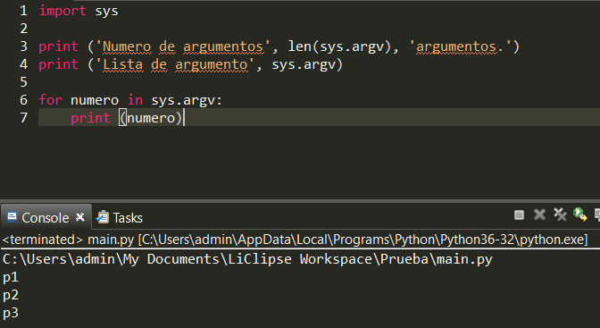¿Cómo funciona el siguiente código?
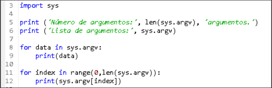R. El código lo que hace es que se importan las variable sutilizadas por el interprete sys, luego se imprime el numero de argumentos que se tienen en sys.argv, se imprime donde se localizan estos argumentos. Luego se realiza un ciclo for para recorer e imprimir cada uno de los argumentos y por ultimo se tiene otro ciclo for en el que se realiza algo muy similar a lo anterior pero definido de una manera diferente (acá se recorre especificamente la cantidad de veces que se quiera, que en este caso es el mismo tamaño de la lista).
¿Qué es la clase range?
La clase range nos permite iterar sobre una secuencia de numeros, desde el primer valor que se le asigne, de unoen uno hasta el ultimo valor asignado.
RETO 2
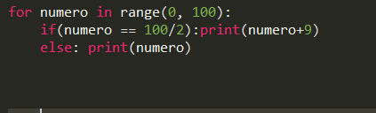Explique la ventaja en términos de uso de memoria de utilizar un objeto range vs un objeto list.
R. Cuando se crea un range, python no crea una lista sino que lleva un contador que parece ser una lista, y encambio la lista crea una lista verdadera que tiene cada una de sus posiciones en la memoria, por lo tanto es más pesada para la memoria.
3. Manipulación de nombres de archivos
Realice un programa de prueba que imprima el resultado
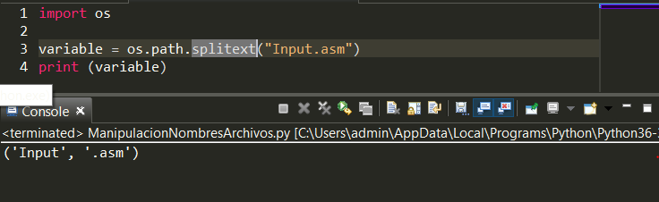